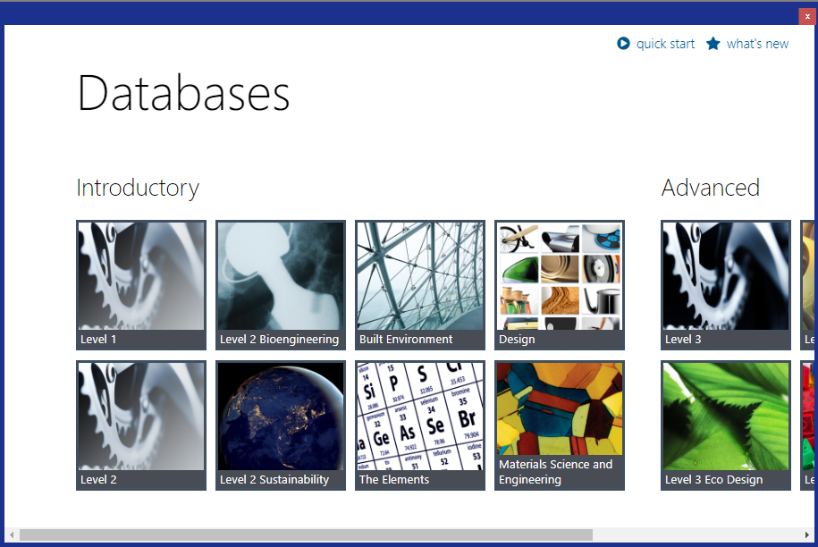
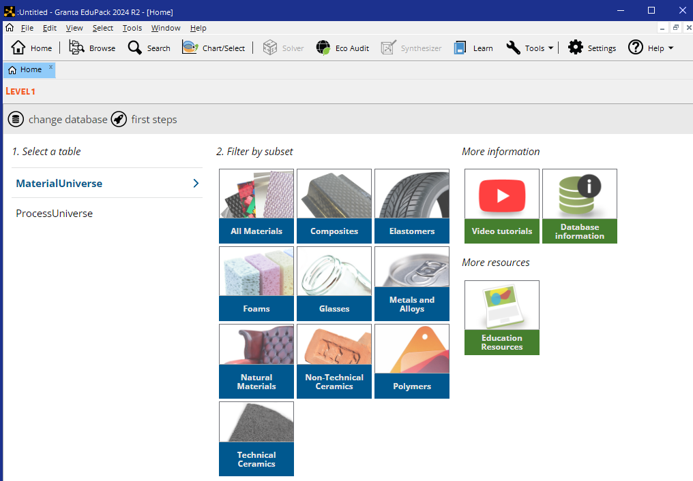
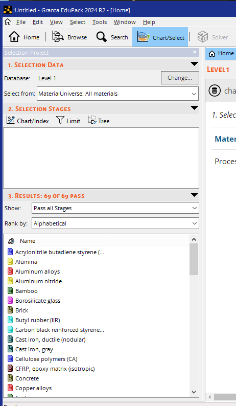
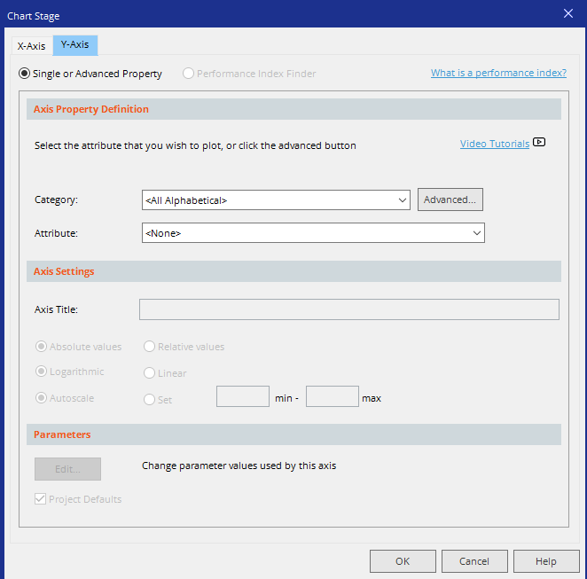
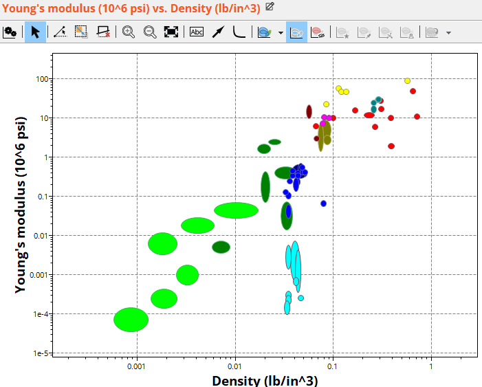
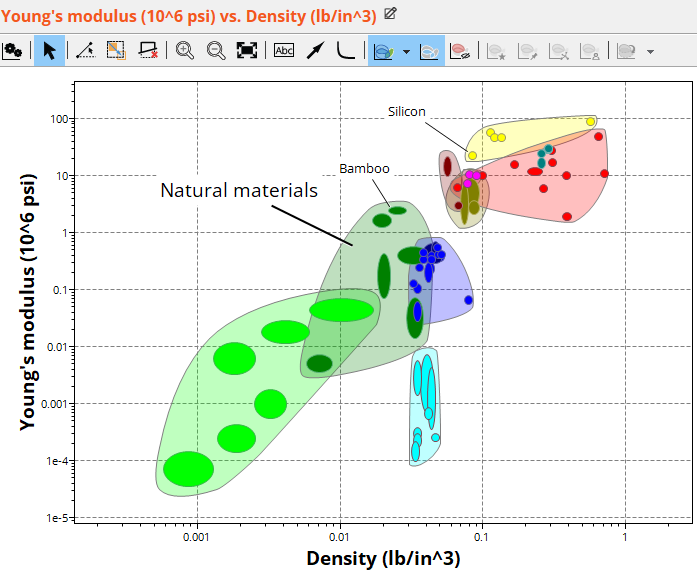
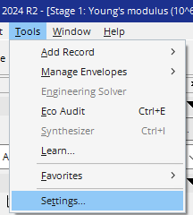
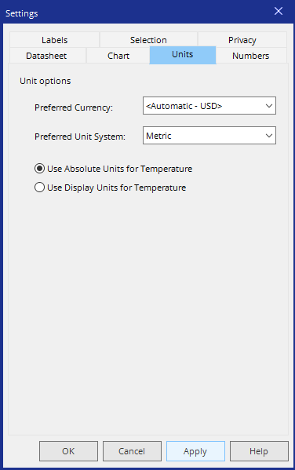
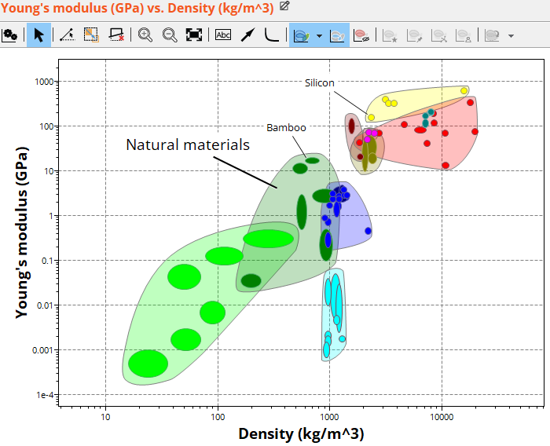

In this lesson, we will explore how to use Granta EduPack to generate
bubble charts and bar charts. We will also show how to make advanced materials charts using combinations of properties.
This powerful tool allows visualization of material properties, aiding in the selection process
for engineering applications.
Step-by-Step Guide: Basics
Open Granta EduPack: Launch the software and navigate to the "Materials" tab.

Window displayed upon first starting Granta EduPack 2024
Select a Dataset: Choose the appropriate dataset
based on your project requirements. We will primarily use Level 1, Level 2, or The Elements databases. Let's choose Level 1 for this example.

Window displayed after selecting the Level 1 database.
Generate a Chart: Click on "Chart/Select" menu and the following panel will show on the left. From this panel, select
"Chart/Index" from the section 2. Selection Stages.

Window displayed after selecting the "Chart/Select".
Generate a Chart: After selecting "Chart/Index" from the previous step, the following window appears. and select
properties for the X-axis and Y-axis. For example, plot "Density"
vs. "Young's Modulus."

Window displayed after selecting the "Chart/Index".
Generate a Chart: Select properties for the X-axis and Y-axis. You can switch between the X and Y axis using
the tabs at the top of this window. Then use the drop down for "attribute" to select your property of interest. For example, plot
"Young's Modulus" (Y-axis) vs. "Density" (x-axis).

Plot of the Young's modulus vs density using the Level 1 database.
Chart options: Turn on the "Show family envelopes" using the icon at the top and try clicking on an envelope or a few bubbles. This
will create draggable labels. Below I've labeled the natural materials envelope and bubbles: bamboo and silicon.

Labeling family enverlopes and material bubbles.
Fix those units!: The next thing we need to do (and we only have to do this once) is to fix those units. There are two options
we need to set for the default units, one for preferred unit system (select Metric) and one for the temperature (select use absolute units for temperature).

Navigate to the Tools / Settings menu.

Set the preferred units as shown. Click Apply and OK.
Final Chart: You final chart should now look like the one below.

Chart now with correct units.
Video Lesson: Advanced Charting
The video uses an older version of the Granta software but the procedures haven't changed.
Video length: 7 min
Conclusion
Granta EduPack is a versatile tool that simplifies material selection
through interactive charts. Practice generating charts with different
databases. Try the level 3 database to see all the available materials. Double click on any material to
bring up a detailed record for that material.